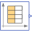
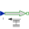
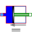
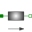
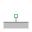

TestCylinderTwo cylinder system |
|
Diagram
{kind=link}
Information
This information is part of the Modelica Standard Library maintained by the Modelica Association.
Test of a system with 2 cylinders (with same volume):
- cylinder1: A = 0.1 m2, L=10. m, initial position of piston at s=L/2
- cylinder2: A = 1.0 m2, L=1.0 m, initial position of piston at s=L/2
A force is applied that presses from 0.25 s to 0.50 s with 1 Nm on piston1. Due to the ratio of areas 10:1
- the force at piston2 is ten times the force at piston1
- movement of piston1 is ten times the movement of piston2
At piston2 a mass is mounted which is moved and presses the springDamper. When the force at piston1 is removed, the springDamper pushes back the mass and a damped oscillation occurs.
Note: Take care of the initial conditions. The unstretched spring length is cylinder2.L/2, i.e. when piston2 is the middle of its cylinder the spring applies no force to the mass (and piston2).
Outputs (5)
| f1 |
Default Value: -10 * cylinder1.f Type: Force (N) Description: 10 x Force on piston 1 |
|---|---|
| s1 |
Default Value: 0.1 * cylinder1.s Type: Position (m) Description: 0.1 x Position of piston 1 |
| s2 |
Default Value: cylinder2.s Type: Position (m) Description: Position of piston 2 |
| f2 |
Default Value: -cylinder2.f Type: Force (N) Description: Force on piston 2 |
| f |
Default Value: springDamper.f Type: Force (N) Description: Force of springDamper |
Components (7)
|  | combiTimeTable |
Type: CombiTimeTable |
|---|---|---|
|  | force |
Type: Force |
|  | cylinder1 |
Type: Cylinder |
| cylinder2 |
Type: Cylinder |
|
|  | mass |
Type: Mass |
| springDamper |
Type: SpringDamper |
|
|  | fixed |
Type: Fixed |